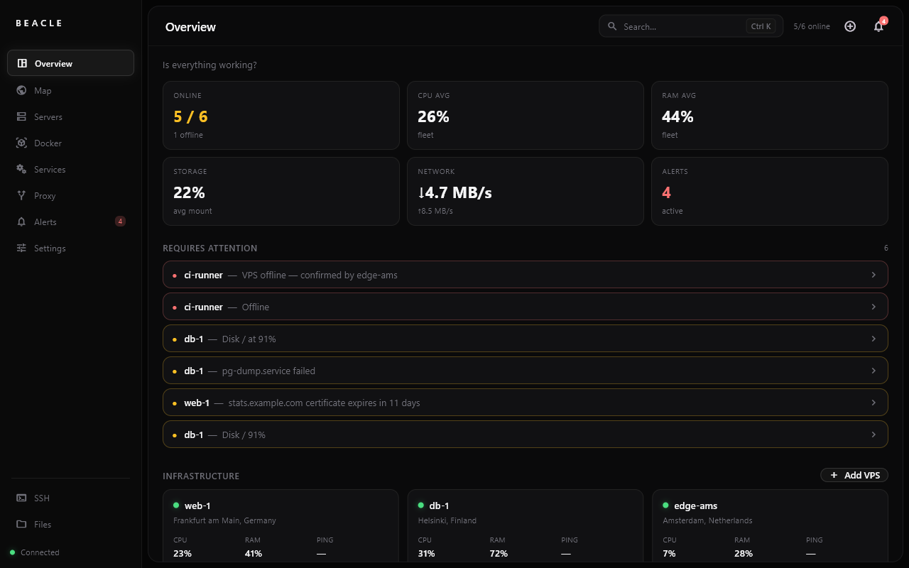

Docker, systemd, logs, alerts and a shell — without ten SSH tabs.

One agent per box. One UDP port, no SSH keys to hand out — just the panel on your PC.
One list for the whole fleet. Logs, exec, stats, restart and compose — without SSHing into anything.
Docker, systemd, Caddy, Nginx Proxy Manager, cron, ufw, screen and nohup — read straight from the box.
Built-in WireGuard — no VPN to install on the server. Port 22 can stay closed; the agent opens the one UDP port it needs.
Terminal through the agent. Run snippets on several servers at once.
Thresholds with hysteresis, so a flapping disk pings you once.
Scroll the history, zoom in, click a spike to see what was running.
Plugins add metrics, alerts, tabs and server cards. Install a .zip from Settings.
Caddy or Nginx Proxy Manager — sites, upstreams and certificates without editing a config file.
Plugins are a few files of Lua. Install one from the Marketplace with a click, or link a folder and write your own.
The Marketplace installs plugins from this repo, at the commit your build came from — the code reviewed with that release.
Neofetch share wants to talk to an address on your network. It gets nothing it didn't list here.
Every plugin lists the files, programs and addresses it needs. You see them before installing — the risky ones in red — and the sandbox holds it to that list.
agent.lua reads things on every server, backend.lua builds tabs, cards and alerts in the panel. Use one or both.
A step-by-step guide, an API reference, editor types for Lua, and three demo plugins to copy from.
Read the guide ↗Beacle brings its own WireGuard tunnel. Nothing to install on the server but the agent, and no VPN account to make.
Download Beacle for your PC. A short first-run wizard and you're in.
Give it a name and its public IP. The panel checks it can reach the box first.
Paste the command the panel gives you into the server (it uses sudo). It picks amd64 or arm64 and opens UDP 51931 on its own.
curl -fsSL …/install_agent.sh | sudo bash -s -- …The tunnel comes up and the panel starts filling with data.
Every build comes from GitHub Actions, never uploaded by hand. Checksums and provenance included.
Linux · amd64 or arm64 · installed from the panel
sha256sum -c SHA256SUMS.txt
Small releases, often. Every one with notes on GitHub.
No. Beacle has its own WireGuard tunnel built in — nothing to install on the server but the agent, no account anywhere. A server that already has Tailscale keeps it as a fallback while the tunnel is down.
One port: UDP 51931. The agent opens it in ufw, firewalld or iptables by itself. A firewall at your provider (Oracle security list, AWS security group, Hetzner Cloud Firewall) you open by hand. Port 22 can stay closed.
One agent, written in Go — Linux, amd64 or arm64. It reads Docker, systemd and the rest, and runs what you ask from the panel. Updated from the panel too.
The panel checks GitHub releases and, on Windows, updates itself with one click. Agents update from the panel on demand, only when a newer one exists, and their config is never overwritten.
To your PC. The panel runs there and talks to your servers directly — no Beacle cloud, no account. Besides your servers it only reaches GitHub (updates, Marketplace), ip-api.com (a server's public IP, to put it on the map) and the webhooks you set.
A plugin gets only what its manifest lists: which files it reads, which programs it runs, which addresses it talks to. You see that list before installing, and the sandbox enforces it.
Yes, free and open source under GPLv3. Every build comes from GitHub Actions and can be checked with gh attestation verify.